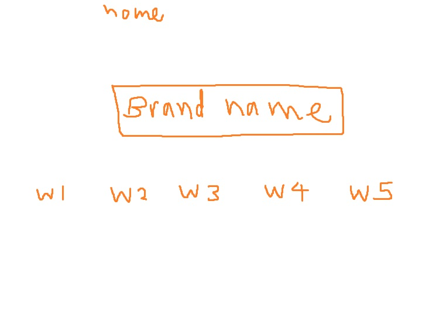
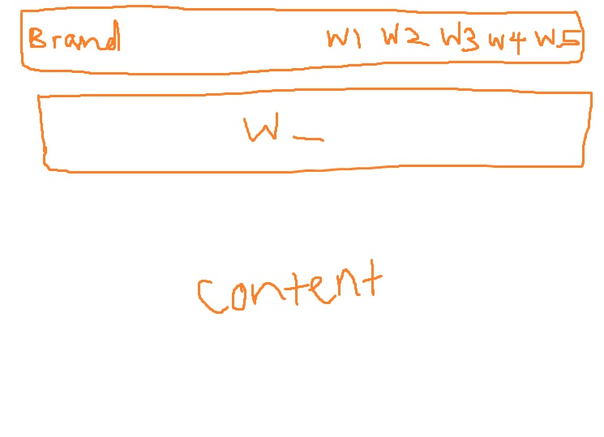

JOLIE CHUA
Introduction
click here to see website
The essential story told by my portfolio site is one of entrepreneurial success and commitment to improving the lives of expectant mothers and families, it illustrates the concept of transforming my vision into a well-established business dedicated to providing valuable products and services during a crucial phase in people’s lives. The website i created reflects a version of me who has achieved financial stability and used my expertise in web design to create a professional and user-centric platform. This version represents my transition from a passionate individual to a successful business owner with the capability to offer solutions and support to those in need.
The primary audience for my site includes expectant mothers, youths and families experiencing challenges, and those seeking reliable resources during pregnancy. My portfolio also targets healthcare professionals who may refer clients to my services and products. By addressing these groups, my portfolio aims to build trust and offer practical assistance to individuals navigating the complexities of pregnancy and early parenthood.
The web site structure:
1. Home page
Serves as the welcoming gateway to the other site pages, an overview of the different webpages
2. About page
Insight on my educational background, personal details, emphasizing my journey to financial stability and my commitment to my future business. Includes a detailed narrative about my business's origins, vision, and the personal drive behind it's creation.
3. Services page
Outlines the various services i offer, designed to support poeple through consultations, support groups, or personalized assistance. A place to inquire about my services, it includes a contact number, email and postal location of the business.
4. Merch page
Include two sub pages with high-quality images, "Pregnancy" and "Teens". These merchandise pages showcases the range of products available in my business, tailored to pregnant women and teens. Making it easier for them to find the items that will best support them.
5. Resources page
Offers links to reliable articles, information and help related to pregnancy, parenting.
6. Contact page
Facilitates easy communication with my business for inquiries, feedback, or support. Include multiple avenues for reaching out such as, contact form and social media links.
Inspiration
1. Rebecca Newton Therapy
https://rebeccanewtontherapy.com/contact
Rebecca Newton’s therapy website impressed me with its clean, professional design and user-friendly layout. The contact page, in particular, stood out to me due to its ease of use. The page features a straightforward format with details such as contact form, clear action buttons, and contact information for visitors. This inspired me to prioritize the accessibility in my own website, ensuring that users can easily get in touch with me.
2. Midwife Lauretta
https://midwifelauretta.com.au/story
The storytelling approach on Midwife Lauretta’s site engaged me as she has shared her personal and professional narrative. The "Story" page of her website consists of compelling visuals with texts to convey her mission and share more about herself. This inspired me to incorporate a similar personal touch in my own site, especially in the "About" section. By sharing my personal journey and the story behind my business, I aim to create a more relatable and engaging experience for my audience.
3. Sara Kay’s Portfolio
https://www.sarakays.com/
Sara Kay’s portfolio site showcases a strikingly visual and modern design, with an emphasis on artistic expression and creativity. The site’s engaging visuals, videos and clear presentation of her work inspired the importance of a visually appealing and entertaining layout of my own portfolio. This encouraged me to focus on high-quality imagery and a unique design for my own site, ensuring that it not only looks professional but also effectively showcases uniqueness.
Accessibility
1. High Contrast and Text Resizing
My Web site features a high contrast color scheme between text and background to ensure readability for users with visual impairments, including those with color blindness. Additionally, the text is resizable through standard browser zoom functions, and the site uses relative units for font sizes rather than fixed units. High contrast helps users with low vision or color blindness to read content more easily, while text resizing options accommodate users with varying levels of visual acuity, making the content accessible to a broader audience.
2. Images
The images correlate to their purpose and are placed alongside text where they reinforce or illustrate the content of my web site. For instance, "clothing" has an image of a garment. The placement of the images is contextually relevant to the surrounding text or content, enhancing the visual support and understanding of my content.
3. Well-Structured Content, Headings and Subheadings
Using direct language to make content easier to understand for all users, including those with cognitive impairments or limited language skills. Organized my web page contents into easily navigable sections, improving readability and comprehension for all users, including those using screen readers or different devices.
Usability
1. Responsive Design
My web site is designed to be fully responsive, with a seamless experience across various devices and screen sizes, from desktop computers to smartphones and tablets.
The site uses flexible grids and layouts that adjust to different screen sizes
The Images and media are made to resize accordingly and maintain quality on any device.
The touch-friendly elements are designed for simple interaction on mobile devices, such as larger buttons and easily clickable links.
2. Navigation
My web site features clear and logical navigation structure in every page, helping users to easily find what they’re looking for. This includes a straightforward menu layout and prominent navigation links.
3. Action Buttons
The Buttons are placed prominently on relevant pages, such as “Shop Now” button on the merch page, “submit” button on the services page, and “Send Message” button on the contact page. The buttons are designed with contrasting colors and clear, actionable texts. The buttons are strategically placed after key contents to prompt users at the right moments.
Learning
1. Adding Custom Fonts
I struggled with incorporating custom fonts into my website, which involved ensuring that the fonts were properly loaded and displayed across different browsers.
How I Solved It:
Learned Font Formats: I learned about different font formats in google search and how they affect browser compatibility. I used a service like Google Font links to add to the home page of my web site.
2. Placement of contents
I had difficulty ensuring that different content elements (such as text, images, and sections) were stacked correctly and appeared in the desired order.
How I Solved it:
CSS Display Properties: I used CSS properties like display: flex; for creating flexible layouts. I tried several positions such as Position: Relative, to place my contents and ensure that they do not overlap each other. Other details that i added were margins and top: to control the spacings between each of my content.
3. Making Texts Wrap Around Images
I faced challenges making text wrap around images in a visually appealing way.
How I Solved It:
CSS Float Property: I used the float property to make text wrap around images.
Responsive Adjustments: I made sure to adjust the layout for smaller screens, often by using media queries to switch between floated and stacked layouts.
Evaluation I: What aspects of your work do you think were particularly successful? Why?
1. Navigation Success
I made my web site’s navigation easy to use, allowing visitors to quickly navigate to the contens and find the information or products that they need.
Logical Structure: The navigation menu is organized with simple labels and categories, making it straightforward for users to understand and use.
Prominent Placement: Key navigation sites are positioned prominently, ensuring that they are easily accessible from any page.
2. High-Quality Imagery and videos
The Images and videos that i added are well-chosen, relevant, and include descriptive texts, improving the overall visual appeal and purpose of my portfolio.
Visual Engagement: High-quality images effectively showcases my business products and services, capturing attention and aesthetic.
Accessibility: text provides context for visually impaired users, ensuring that they can understand and engage with the content.
Contextual Relevance: Images and videos are used in a way that complements and reinforces the surrounding text, enhancing overall content comprehension.
Evaluation II: What aspects of your work could be improved? How might you do things differently another time?
The improvements i will include in the future is linking the social media icons to the actual social media platforms, adding the contents and descriptions of each product, adding more details such as prices and certifications to the service page.
Resources: What resources did you use in your work? List any sources of information, libraries, plugins, code or tools (you should also indicate inclusions from other sources within your code using comments)
Appendices: Site map (if useful), wireframes and mock-ups
home page:

sub pages:
